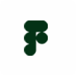

I'm Joey Florencio, a multimedia artist based in the Philippines with a focus on vector illustration, logo design, and motion graphics. I'm currently completing my Bachelor of Multimedia Arts at the University of the Cordilleras, where I've been sharpening my skills in digital art and animation. I enjoy turning ideas into clean, bold visuals — from character illustrations to animated brand identities — and I'm always looking to pick up new tools and techniques along the way.
Bachelor of Multimedia Arts
University of the Cordilleras
A.Y. 2023–2026General Academic Strand
Vedasto R. Santiago High School
A.Y. 2017–2018


Illustration, motion graphics, and product showcase animation — three crafts, one goal: turning ideas into visuals that are ready to move, ship, and stand out.
From clean vector illustrations and logo designs to animated brand identities and polished product showcase videos, every piece is built with the same attention to detail, from first sketch to final frame.


Graphic Design

Got a project in mind or just want to say hi? I'm always open to new collaborations, freelance work, and creative ideas -- reach out through any of the channels below and let's talk.